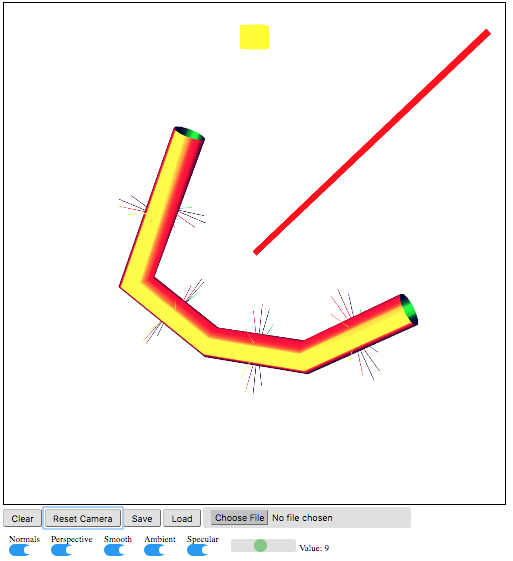
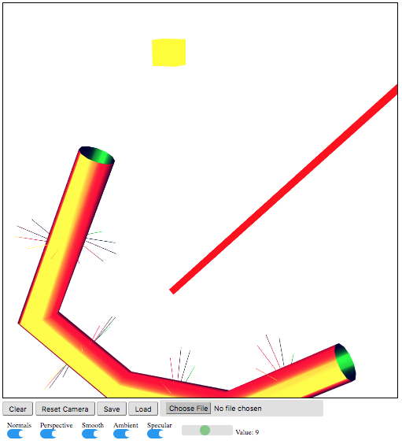
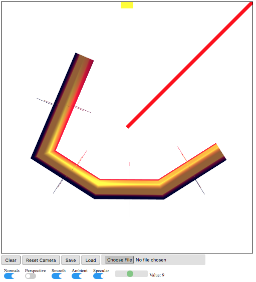
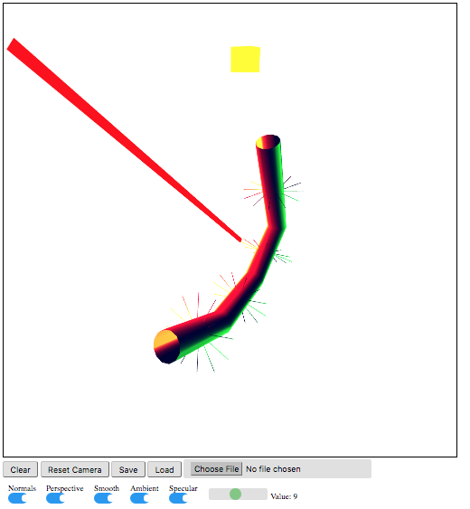
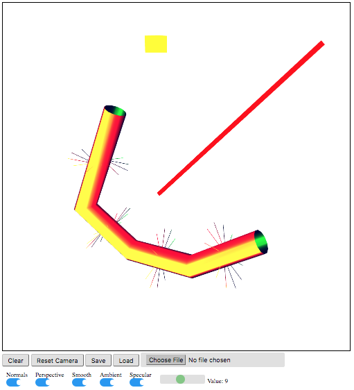

Name: Paula Espiritu
Login ID: mespirit
Prog Details: 3D Cylindrical Model Generator with Multiple Lighting Types
Date: Dec 3, 2017
High Level Description (what was implemented, what was not, any special features - Last Point):
- User may place points on a canvas until a right click is pressed.
- Upon right clicking, a cylindrical shape is generated.
- A user may save a wireframe and re-load it at a later time.
- Includes toggles to display normals and to add ambient/specular lighting.
- User can alter the gloss value by adjusting the slide.
- All color functions work with save/load
- User may select different perspective
- User may select different light sources
- User may adjust camera settings
- Note: Attempted making separate mesh objects
- Note: Transformations not working
User Guide (If Needed):
- Use left mouse click to place point.
- Drag mouse to next point.
- Repeat until done with polyline.
- Right click to stop drawing polyline and generate colored shape.
- Select Save button and input a file name to save a wireframe.
- Select input and select the file you would like to load, then click load.
- Press Normals toggle to show normals of generated wireframe.
- Press Ambient and Specular toggles to display lighting adjustments.
- One specular toggle is adjusted, the slider should adjust gloss automatically.
- Select line or cube above to turn on light sources.
- Select perspective toggle to change views.
Driver HTML File
Orthographic View

Orthographic View (Zoom + Pan)

Perspective View

Perspective View (Pan + Camera Zoom)

Perspective View (Zoom + Pan + Camera Zoom)
